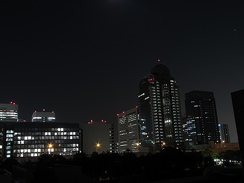
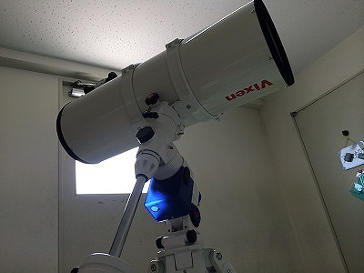
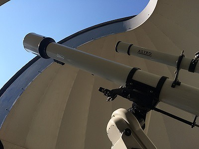
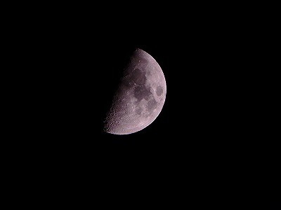
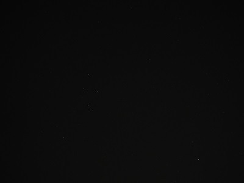
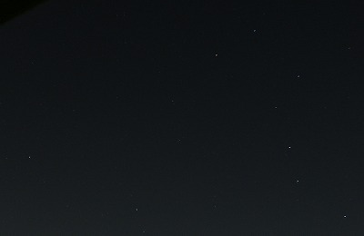
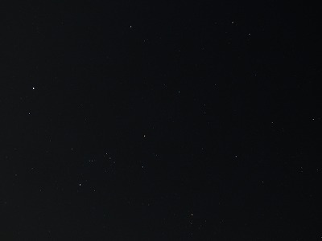

|  今日も頑張る企業戦士 (注：ビルからの光のせいでしばらくは暗い星たちは見えません。深夜になるのを待ちましょう。) |
 夜になると (注：グラウンド側の天体は屋上からでも見えるので、基本的にはそちらを使います。) |
|---|---|
| 観測に使うのはこれ↓と  |
これ↓。  (注：画像は昼に撮影したものです。) |
|  月は出ているか？ (注：基本的に月は明るすぎるので観測の邪魔になります。) |
 天に祈っていると、こんなものが見えたり。 (いるか座？) |
| 他にも、こんなの↓や、  ４階の廊下から北斗七星 |
こんなの↓も見えます。  冬の大六角(ダイアモンド) |